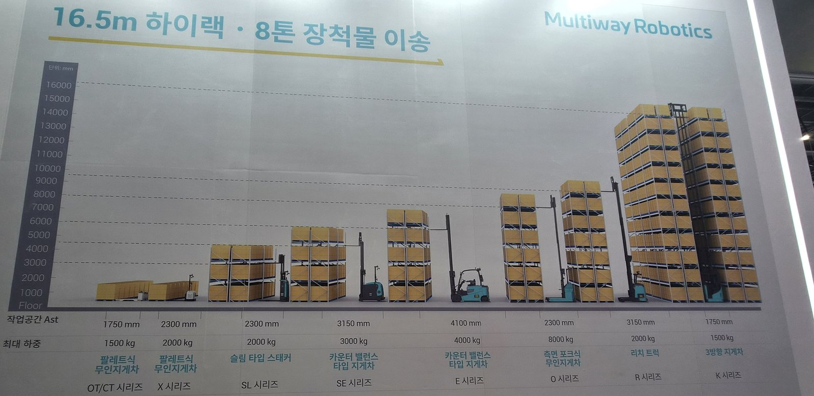
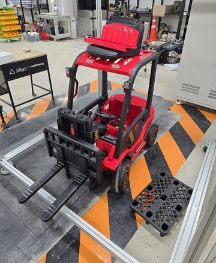
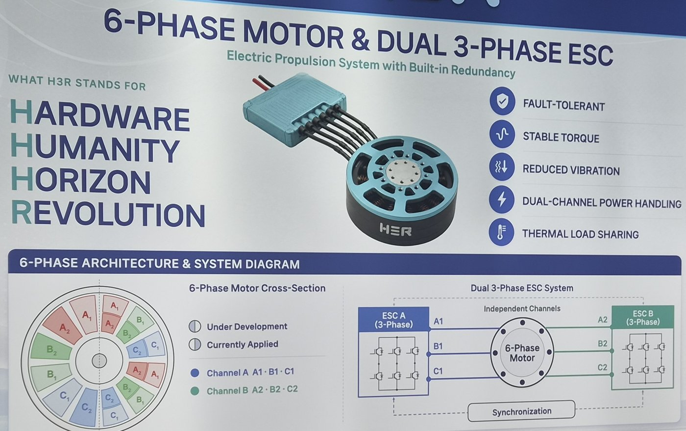
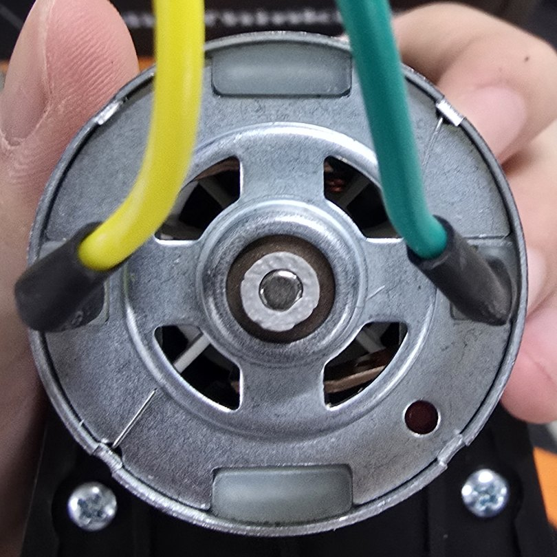
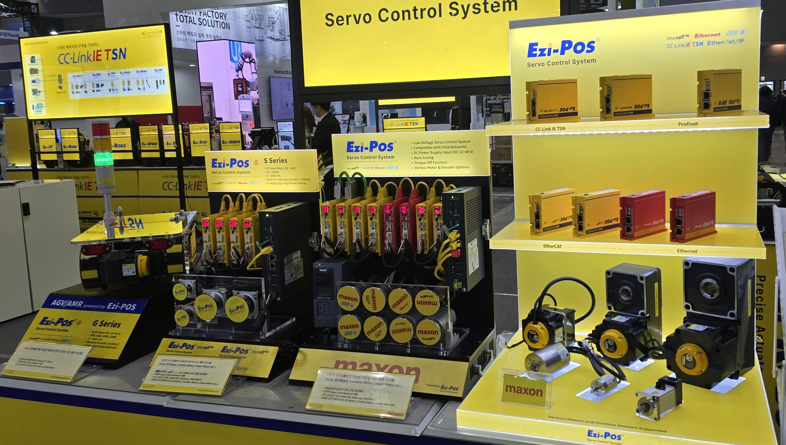

| 업체 | 분야 | 살펴본 것 |
|---|---|---|
| Multiway Robotics | 무인 지게차 | 작업 통로 폭 · 최대 하중별 지게차 8종 |
| H3R | 드론 모터 · ESC | 6상 모터와 3상 ESC 두 개를 묶은 구동계 |
| CubeMars | 로봇 관절 모터 (AK 시리즈) | CAN 연결 문제와 CAN FD 출시 계획 |
| FASTECH (Ezi-Pos) | 서보 모터 드라이버 | maxon 모터 겸용 EtherCAT · Ethernet 드라이버 |
2026 로보월드 · 고양 킨텍스 1전시장 · 11월 4–7일 · 402개 기업 참가 (견학 11월 6–7일)


| Multiway 제품군 | 우리 차체 | |
|---|---|---|
| 형태 | 카운터밸런스 · 리치 · 3방향 등 8종 | 카운터밸런스 형태 |
| 최대 하중 | 1,500–8,000 kg | 10 kg |
| 들어 올리는 높이 | 최대 16.5 m 랙 | 0.28 m |


| H3R 드론 모터 | 우리 바퀴 모터 | |
|---|---|---|
| 모터 | 3상 BLDC (6상 개발 중) | 브러시 DC, 축 지름 3 mm |
| 회전 감지 | 엔코더 없이 홀 센서만 사용 | 축 끝 자석 + MT6701 자기 엔코더 |
| 센서 장착 | 작은 모터라 엔코더 자리 부족 | 축에 끼운 출력 링에 자석 부착 |

| 통신 | 확인한 내용 | |
|---|---|---|
| CubeMars AK 모터 | CAN | 여러 대 동시 연결 시 통신 불량, 내년 CAN FD 제품 출시 예정 |
| FASTECH Ezi-Pos | EtherCAT · Ethernet 등 | maxon 등 여러 모터를 한 드라이버 계열로 제어 |
| 우리 지게차 | 모터 버스 없음 | H743 이 모터 드라이버 4개를 직접 구동 |